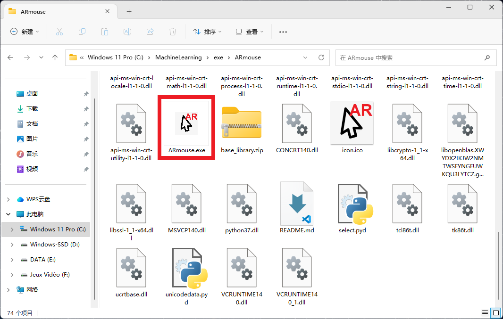
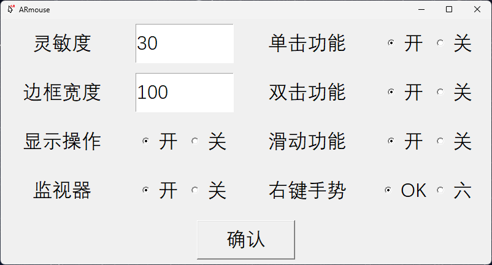
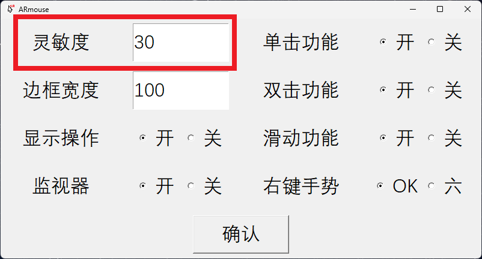
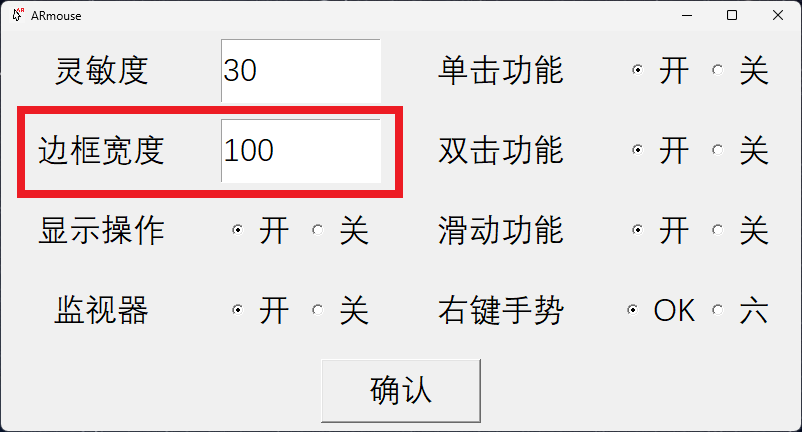
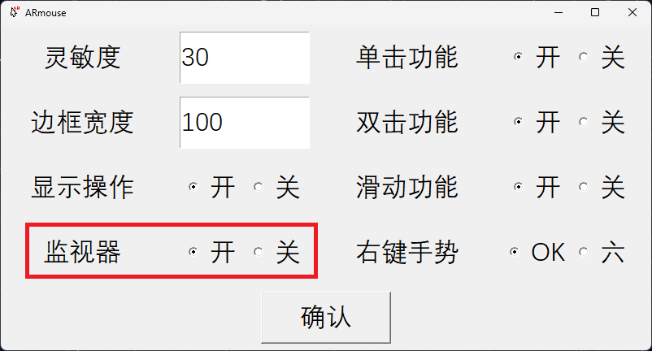
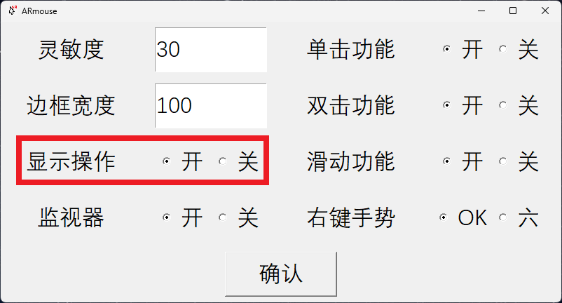
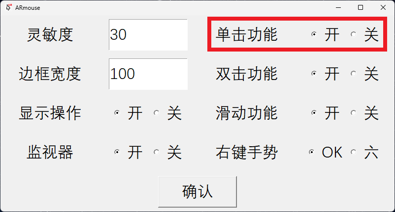
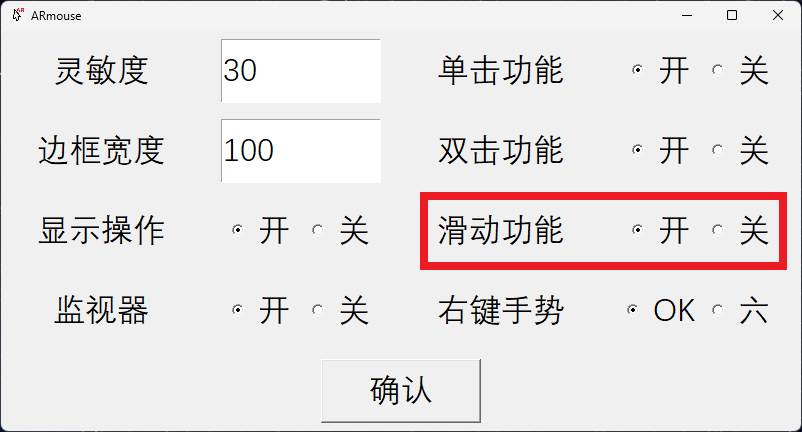
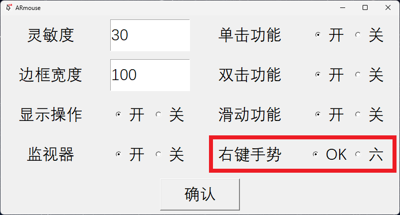

## ARmouse <br> - Welcome to use ARmouse. Here will tell you how to download and use the ARmouse. With this software, you can just move your hands and fingers to control the mouse. <br> <br> --- ## Download <br> - Download the exe files in [github](https://github.com/AlexisZ12/ARmouse.exe). - If you have troubles to download it in github, you can also download it in [百度网盘](https://pan.baidu.com/s/1auJhDhs3lnCiPvvaAl9LwA?pwd=Y1gY) or [迅雷](https://pan.xunlei.com/s/VNW12hWRlxUIr2I23eJtjCNoA1?pwd=bzri). - If you want to know how it works, you can download the source codes in [github](https://github.com/AlexisZ12/ARmouse) as well. <br> <br> > Download the software --- ## Preparations <br> - If you use the source code, you need to pip install these libraries <br> packages version -------------- ------- autopy 4.0.0 keyboard 0.13.5 mediapipe 0.8.3.1 opencv-pyrhon 4.3.038 <br> <br> > Configure the environment --- ## Usage <br> - Click ARmouse.exe(in the root directory) to run the programme. Please make sure you have turn on and equipe the camera. <br>  <br> <br> --- ## Usage <br> - This window is used to adjust some parameters of the program, click "确认" to confirm. <br>  <br> <br> --- ## Usage <br> - This option is used to adjust the sensitivity of the swipe function. The smaller the value, the easier it is to trigger the swipe function. <br>  <br> <br> --- ## Usage <br> - This option is used to add dead zones to the edges of the camera. The larger the value, the larger the dead zone for scanning your hand activity, the more sensitive the operation is in the effective area. <br>  <br> <br> --- ## Usage <br> - This option controls whether a window is opened to display footage taken by your camera. Select "开" to open this window. <br>  <br> <br> --- ## Usage <br> - This option is used to control whether the action you are performing is displayed on the window of camera. Select "开" to open this window. <br>  <br> <br> --- ## Usage <br> - This option is used to control whether to turn on the click left mouse button function. Select "开" to open this window. <br>  <br> <br> --- ## Usage <br> - This option is used to control whether to turn on the double-click left mouse button function. Select "开" to open this window. <br> <img src="img/U7.png" alt="" title="double-click left mouse button" width="401" height="216"> <br> <br> --- ## Usage <br> - This option is used to control whether to turn on the swipe function. Select "开" to open this window. <br>  <br> <br> --- ## Usage <br> - This option is used to select the gesture that triggers the right mouse click. Select "OK" to click the right mouse by the ok gesture. Select "六" to click the right mouse by the number six gesture. <br>  <br> <br> --- ## Usage <br> - Extend and move your palm to move the mouse cursor. <br> <br> <br> --- ## Usage <br> - Extend your index finger to press the left mouse button and drag your index finger to drag the mouse. Extend your index finger and turn back into your palm to click the left mouse button. <br> <br> <br> --- ## Usage <br> - Extend your index and middle fingers to perform a double-click on the left mouse button. <br> <br> <br> --- ## Authors <br> - Zhang Shibo - Weng LiuChen - Ma Zhe <br> - All from Shu <br> <br> > Our team --- ## Contacts <br> - WeChat: `Alexis_12_Z` <i class="fa-brands fa-weixin"></i> - Email: 2242809239@qq.com <i class="fa fa-envelope-o"></i> <br> <br> > If you have any suggestion, you can conct us. --- ## Thank you <br> - That's all! <br> <br> > Have a nice day!